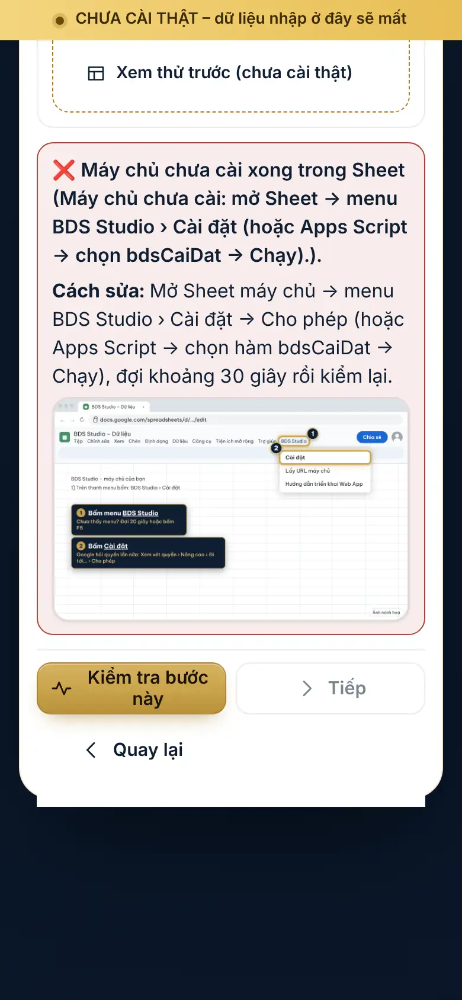
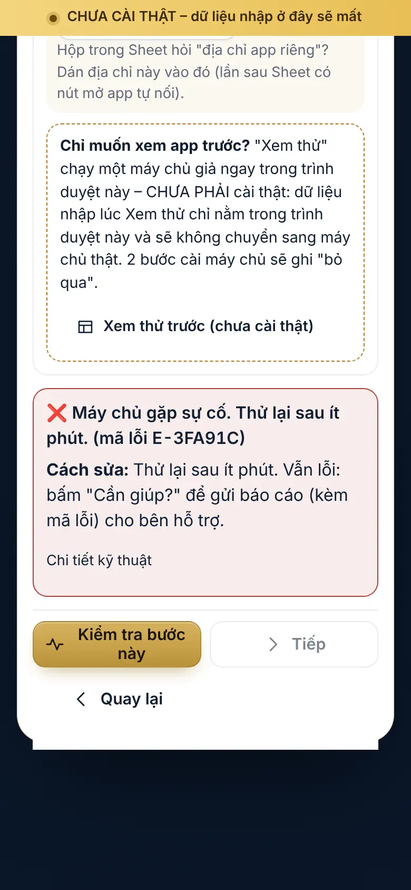
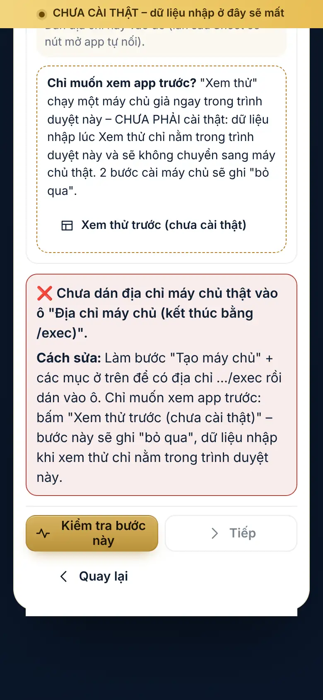

5. Lỗi thường gặp
Mỗi lỗi trong app có 2 phần: ❌ nguyên nhân và Cách sửa.
Làm theo Cách sửa trước. Vẫn lỗi thì gửi bên hỗ trợ (cuối trang).
Bảng tra nhanh
| App báo | Nguyên nhân | Cách sửa |
|---|---|---|
Máy chủ chưa cài xong trong Sheet (SETUP_REQUIRED) | Chưa chạy Cài đặt trong Sheet, hoặc đang cài lần đầu | Mục 1 |
| Máy chủ gặp sự cố. Thử lại sau ít phút. (mã lỗi E-xxxxxx) | Máy chủ Google gặp lỗi | Mục 2 |
| Đang tải dữ liệu lần đầu… mãi không xong | Mạng chậm, Google bận, địa chỉ máy chủ sai | Mục 3 |
| Có người gửi "bộ cài" để cài | Bản này không có bộ cài nào | Mục 4 |
| Lúc Triển khai chưa chọn 'Bất kỳ ai' | Quyền truy cập máy chủ sai | Mục 5 |
| Địa chỉ chưa đúng / Đây là địa chỉ của Sheet | Dán nhầm địa chỉ | Mục 6 |
| Máy chủ chưa có chức năng này – cần cập nhật máy chủ | Máy chủ bản cũ | Mục 7 |
| Tài khoản đã đăng nhập trên một máy khác. Máy này đã đăng xuất. | Tài khoản vừa vào máy khác cùng loại | Mục 8 |
| Xác nhận đổi máy – nhập mã 6 số trong email | Đang có máy cùng loại đăng nhập | Mục 8 |
| Muốn chuyển sang máy này cần mã… nhưng tài khoản chưa có email | Tài khoản chưa có email | Mục 8 |
1. SETUP_REQUIRED – "Máy chủ chưa cài xong trong Sheet"

- Mở Sheet máy chủ (Sheet đã tạo bản sao ở bước 2).
- Bấm menu BDS Studio › Cài đặt.
- Google hỏi quyền: Nâng cao → Đi tới… → Cho phép.
- Chờ khoảng 30 giây.
- Quay lại app, bấm Kiểm tra bước này (hoặc tải lại app).
Lỗi ghi "đang tự cài lần đầu": chỉ cần chờ 30–60 giây rồi kiểm lại.
Không thấy menu BDS Studio: bấm F5 trong Sheet, chờ 10–20 giây.
Vẫn không thấy: Tiện ích mở rộng › Apps Script → chọn hàm bdsCaiDat ở thanh trên → Chạy → Cho phép.
2. "Máy chủ gặp sự cố" + mã lỗi E-xxxxxx

- Chờ vài phút.
- Bấm thử lại.
- Vẫn lỗi: ghi lại mã lỗi (dạng
E-3FA91C, chữ E và 6 ký tự). - Bấm Chi tiết kỹ thuật để xem thêm Nguyên nhân.
- Gửi mã lỗi cho bên hỗ trợ (cuối trang).
Mã lỗi giúp bên hỗ trợ tìm đúng lỗi trong nhật ký máy chủ của anh/chị.
Mã lỗi không chứa dữ liệu khách hay mật khẩu.
3. Tải mãi không xong
Lần đầu đăng nhập trên máy mới, app hiện khung "Đang tải dữ liệu lần đầu".
Thường mất 10–30 giây. Anh/chị vẫn xem được các màn trong lúc chờ.
Quá 60 giây, app báo "Lâu hơn bình thường":
- Kiểm tra mạng (Wi-Fi/4G).
- Bấm Thử lại.
- Vẫn chậm: bấm Gửi cho hỗ trợ (hoặc Chép thông tin cho hỗ trợ).
App trắng hoặc quay mãi ngay khi mở:
- Tải lại trang (F5, hoặc kéo xuống trên điện thoại).
- Thử mạng khác. Mạng công ty có thể chặn Google Apps Script, thử 4G.
- Dùng trình duyệt mới: Chrome/Edge từ bản 100, Safari từ bản 15.
- Không dùng chế độ ẩn danh cho app hằng ngày.
App báo "Máy chủ trả về một trang web thay cho dữ liệu":
Địa chỉ máy chủ sai, hoặc chưa chọn Bất kỳ ai lúc Triển khai. Xem mục 5 và 6.
4. Có người gửi "bộ cài" – bản này không có bộ cài nào
App chạy hoàn toàn trên trình duyệt. Không có tệp nào phải tải về cài trên máy.
Ai đó gửi tệp "bộ cài BDS Studio" qua Zalo, email: không mở, báo bên hỗ trợ.
5. "Lúc Triển khai chưa chọn 'Bất kỳ ai'"
- Mở Sheet máy chủ → Tiện ích mở rộng › Apps Script.
- Bấm Triển khai › Quản lý triển khai (Deploy › Manage deployments).
- Bấm bút chì Sửa (Edit).
- Ô Người có quyền truy cập: chọn Bất kỳ ai (Anyone).
- Bấm Triển khai (Deploy).
- Địa chỉ
/execgiữ nguyên. Quay lại app, bấm kiểm lại.
Tài khoản Google công ty không có lựa chọn Bất kỳ ai: nhờ quản trị viên Google Workspace cho phép.
6. Dán nhầm địa chỉ máy chủ

Địa chỉ đúng:
- Bắt đầu bằng
https://script.google.com/macros/s/. - Kết thúc bằng
/exec.
Hay nhầm:
- Địa chỉ của Sheet (
docs.google.com/spreadsheets/…). - Trang soạn mã Apps Script (
script.google.com/home…). - Địa chỉ chạy thử, kết thúc bằng
/dev.
Lấy lại địa chỉ đúng:
- Mở Sheet máy chủ.
- Bấm BDS Studio › Lấy URL máy chủ.
- Bấm Chép URL.
- Dán vào ô Địa chỉ máy chủ (kết thúc bằng /exec) → Kiểm tra bước này.
Không còn menu BDS Studio (bình thường sau lần cập nhật máy chủ đầu tiên):
- Trên Sheet: Tiện ích mở rộng › Apps Script.
- Triển khai › Quản lý triển khai.
- Chép URL ứng dụng web (kết thúc bằng
/exec).
7. Máy chủ bản cũ
App báo "Máy chủ chưa có chức năng này – cần cập nhật máy chủ":
- Vào Cài đặt › Phiên bản.
- Bấm Cập nhật máy chủ.
- Làm theo hướng dẫn hiện ra.
Không cần bật gì trên trang Google Cloud.
8. Đổi máy và bị đăng xuất
Mỗi tài khoản đăng nhập cùng lúc 1 máy tính + 1 điện thoại (iPad, máy tính bảng tính là điện thoại).
Đang đăng nhập máy mới, app hỏi "Xác nhận đổi máy":
- Mở email của tài khoản, tìm thư Mã xác nhận đổi máy BDS Studio. Không thấy: xem Thư rác.
- Nhập mã 6 số, bấm Xác nhận đổi máy.
- Mã hết hạn (10 phút) hoặc nhập sai 5 lần: bấm Gửi lại mã (sau 60 giây).
- Máy cũ cùng loại sẽ tự đăng xuất. Không muốn vậy: bấm Quay lại đăng nhập.
Máy báo "Tài khoản đã đăng nhập trên một máy khác … Máy này đã đăng xuất":
- Tài khoản vừa đăng nhập trên một máy cùng loại khác (trong ngoặc ghi loại máy và giờ).
- Dữ liệu không mất: app đã gửi nốt thay đổi chưa gửi. Còn sót (mất mạng) thì vẫn nằm trên máy này; đăng nhập lại đúng tài khoản là tự gửi. Màn còn nút Tải tệp các thay đổi chưa gửi – tải về để nhập lại ở Cài đặt › Bảo trì & Sao lưu › Khôi phục từ tệp khi cần.
- Muốn dùng tiếp máy này: bấm Đăng nhập lại → nhập mã trong email. Máy kia sẽ đăng xuất.
- Không phải anh/chị đăng nhập ở máy kia: đăng nhập lại ngay, rồi đổi mật khẩu ở Cài đặt › Bảo mật.
Máy báo "đã được đăng xuất từ xa": có người bấm Đăng xuất máy này cho máy đó (anh/chị, hoặc Quản trị ở bản Công ty). Đăng nhập lại là dùng tiếp. Nếu người đó tick Máy bị mất – xoá dữ liệu trên máy thì dữ liệu và thay đổi chưa gửi trên máy này đã bị xoá; không tick thì dữ liệu vẫn giữ.
App báo "… nhưng tài khoản chưa có email":
- Trên máy đang dùng: Cài đặt › Thông tin cá nhân → thêm email → Gửi mã → nhập mã.
- Hoặc trên máy đang dùng: Cài đặt › Bảo mật › Thiết bị → Đăng xuất máy này cho máy cũ. Máy mới đăng nhập được ngay, không cần mã.
- Nhân viên: nhờ Quản trị đăng xuất máy cũ giúp (Cài đặt › Người dùng).
- Chủ / Quản trị không còn máy nào mở được app và chưa có email: mở Sheet máy chủ → Tiện ích mở rộng › Apps Script → chọn hàm
khoiPhuc2Lop→ bấm Chạy.
Trong 24 giờ, lần đăng nhập kế tiếp của Chủ không hỏi mã; máy cũ cùng loại tự đăng xuất. Đăng nhập xong: thêm email ngay ở Cài đặt › Thông tin cá nhân.
Không đổi máy được vì "Đã gửi mã nhiều lần": chờ đúng giờ app ghi rồi thử lại (mỗi tài khoản tối đa 3 mã trong 15 phút, 10 mã mỗi ngày).
Lỗi khác hay gặp
| Hiện tượng | Cách sửa |
|---|---|
| Không nhận được mã 6 số qua email | Xem Thư rác/Quảng cáo. Chờ 60 giây, bấm Gửi lại mã. |
| App ghi "Chế độ chỉ xem" | Hết dùng thử (hoặc bản quyền có thời hạn đã hết). Mua hoặc nhập mã ở Cài đặt › Bản quyền – xem Bản quyền. Dữ liệu không mất. |
| Nút AI không hiện | Chưa có khoá AI. Xem 03_AI_VA_CHI_PHI.md. |
Gửi lỗi cho bên hỗ trợ
Khi đang cài (Trợ lý cài đặt):
- Bấm Cần giúp? ở đầu Trợ lý.
- App soạn sẵn báo cáo cài đặt, có cả mã lỗi.
- Bấm Chép báo cáo (hoặc Tải tệp, Gửi…).
- Gửi qua email, Zalo hoặc Telegram của bên hỗ trợ (địa chỉ hiện trong hộp).
Khi đang dùng app:
- Bấm Chi tiết kỹ thuật dưới thông báo lỗi. Chép Mã lỗi E-xxxxxx.
- Bấm nút ✨ Trợ lý AI ở góc dưới phải → Góp ý / Gửi cho người bán.
- Dán mã lỗi, ghi đang làm gì thì lỗi.
- Chủ tài khoản bấm Gửi cho người bán. App soạn sẵn email.
Báo cáo của app không chứa mật khẩu, mã bot hay khoá AI.
Ảnh chụp màn hình: che tên, số điện thoại khách trước khi gửi.
Gửi kèm:
- Mã lỗi (nếu có).
- Màn đang mở, nút vừa bấm.
- Máy gì (điện thoại/máy tính), trình duyệt gì.
Trước: 03_AI_VA_CHI_PHI.md · Về đầu: 01_BAT_DAU.md